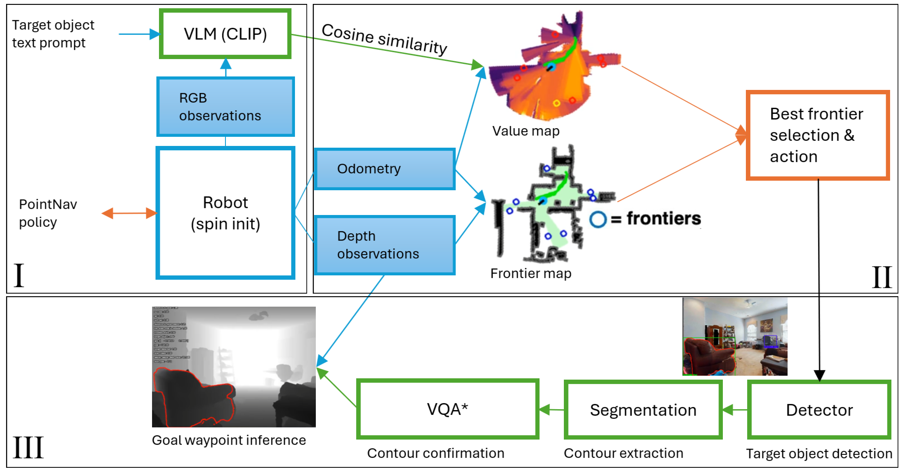

I'm a PhD student in Computer Science at National University of Kyiv-Mohyla Academy (NaUKMA) advised by Dr. Nadiya Shvai. My research interests include reinforcement learning, robotics, and vision-language-action models.
Before my PhD, I completed my Bachelor of Science in Software Engineering and Master of Science in Applied Mathematics at NaUKMA. There, I conducted research on Adversarial Sparsity in Attacks and Defenses for L-inf threat model. Apart from my academic pursuits, I work as a Head of AI at a Ukrainian startup with a focus on scalable LLM and Gen AI solutions.
I am also a senior lecturer at NaUKMA, where I teach undergraduate and graduate AI courses and supervise emerging talent. I actively support Ukraine’s AI community by mentoring aspiring AI engineers, speaking at international conferences and events, and collaborating on cutting-edge research.
In my free time, I play shogi, collect vinyl, and create delicious dishes.
The recordings of my courses, lectures, events, and talks:
Recent News
- 2025-02: I spoke about my research in robotics on the AI HOUSE Podcast!
- 2025-02: Code for TD-MPC-Opt available at GitHub!
- 2024-12: Our paper on Knowledge Transfer accepted for AAMAS 2025 extended abstract!
- 2024-12: I spoke at AI & blockchain panel at Kyiv Blockchain Day 2024!
- 2024-11: I contributed AI cybersecurity module for Google's AI for Productivity!
- 2024-11: I presented at Kyiv AI & BigData 2024!
- 2024-10: I joined AI HOUSE as a mentor!
- 2024-08: I have given my first offline talk on robotics & RL at KSE!
- 2024-07: I mentored teams at AI HOUSE Startup Camp!
- 2024-07: Our esearch poster was accepted at Toronto Robotics Conference 2024!
- 2024-07: Our object goal navigation paper accepted at ICTERI 2024 Poster track!
- 2024-07: I attended AI & Creativity Summer School in Bologna!
- 2024-07: I spoker at a "From Junior to Senior: How to Build an Effective IT Career" panel discussion!
- 2024-06: The preprint of our robotic goal navigation paper is published!
- 2023-10: I started my PhD at NaUKMA advised by Dr. Nadiya Shvai!
Highlights
|
Shared my thoughts on robotics in AI HOUSE Podcast! 20 Feb 2025 Talked about robotics, my latest research, my collab with U of T, and more |
|
|
AAMAS 2025 Extended Abstract Published 9 Jan 2025 Code for TD-MPC-Opt available on GitHub |
|
 |
Joined Google's AI for Productivity 13 Nov 2024 Contributed a module on AI cybersecurity to Google's AI for Productivity course |
|
Talk at Kyiv AI & BigData 2024 2 Nov 2024 Discussed advancements in AI & BigData |
|
|
First Poster at ICTERI 2024 24 Sep 2024 "Balancing Performance and Efficiency in Zero-shot Robotic Navigation" |
|
 |
Robotics & RL Talk at AI Meetups 31 Aug 2024 Engaging robotics talk and Q&A at KSE |
 |
Joined AI House Startup Camp 2024 25-28 Jul 2024 Mentored 9 startups teams |
|
Talk at Toronto Robotics Conference 2024 23 Jul 2024 Presented our semi-supervised learning for human-robot locomotion research |
|
 |
AI & Creativity Summer School 5-15 Jul 2024 Explored LLMs, AI regulation, and met many incredible people |
|  |
Published Preprint on Robotic Goal Navigation 5 Jun 2024 Zero-shot Habitat-Matterport 3D navigation |
 |
StairNet in BioMedical Engineering OnLine 15 Feb 2024 Overview of human-robot stair recognition |
 |
Offline Intro Lecture on Deep RL 27 Jan 2024 Talked at a RL Competition at NaUKMA |
 |
First Student Robotic Sumo Competition 14 Dec 2023 6 teams, over 40 participants |
 |
StairNet Preprint for BioMedical Engineering OnLine 31 Oct 2023 Lightweight visual stair recognition |
|
Tech Talk on ExoNet-SSL at DS UA Meetup 20 Jul 2023 SSL in robotics discussion |
|
 |
ExoNet-SSL at IROS 2023 29 Jun 2023 Human-robot perception research |
 |
Defended Master's Thesis on Adversarial Sparsity 12 Jun 2023 Novel n-Ary hybrid search for robustness |
 |
Poster Accepted at ICAIR 2023 3 Apr 2023 SSL for human-robot perception |
 |
Joined "CSC2431: AI in Medicine" as Instructor 13 Sep 2022 International course with UofT PhD students |